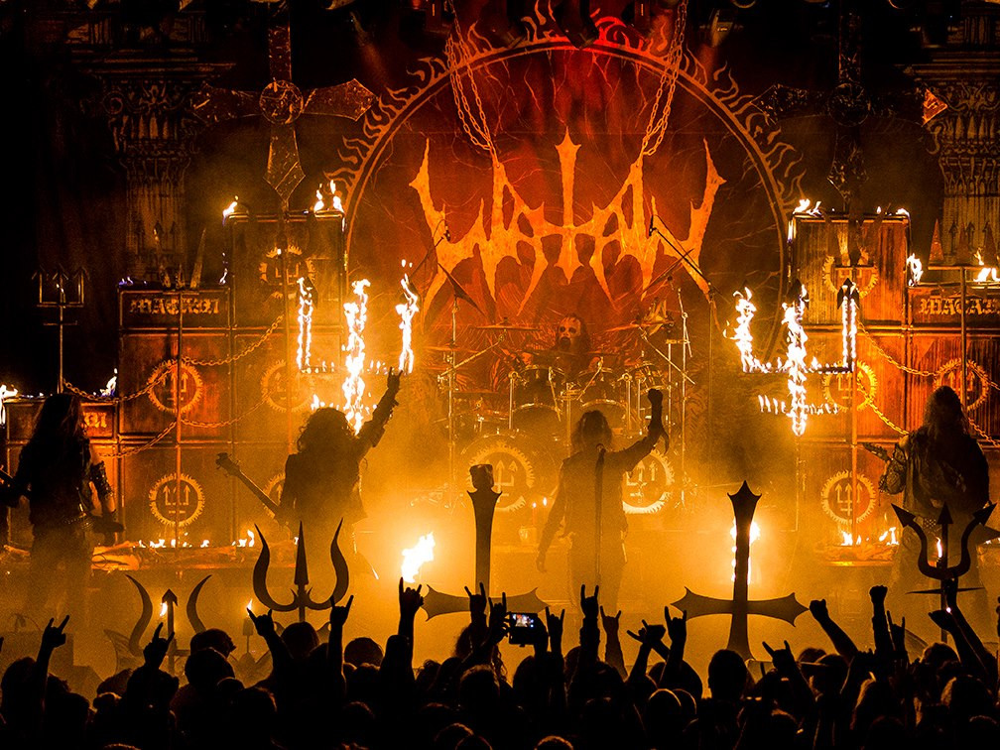
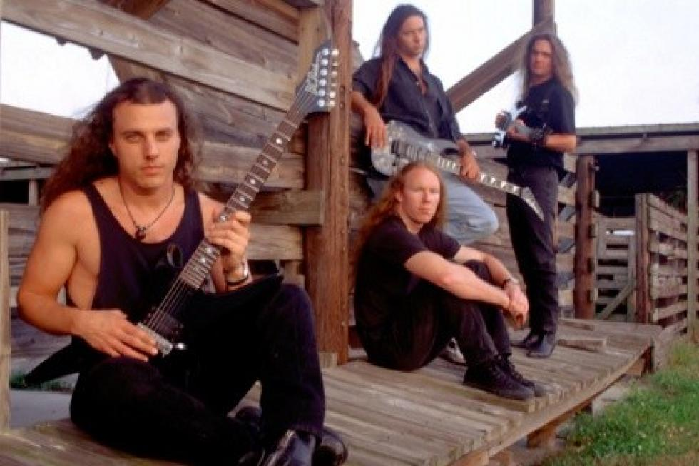

Death Metal
Influences
Death Metal is most influenced by Thrash Metal, Early Black Metal bands and Hardcore Punk. It was later influenced by Heavy Metal and Progressive Rock, spawning new subgenres.
In the early 90s, Death Metal bands such as Possessed and Death started building on the ground work laid by bands such as Venom, Slayer and the other Teutonic Thrash metal bands.
Description
Death Metal artists tend to use distorted guitars tuned very low. It is not uncommon to see guitars tuned down to a low A Standard. Death metal has also been known to include palm muting, taken from thrash metal, and very fast tremolo picked riffs. Drumming and Vocals however are where Death Metal really gets set apart though, with the drummer playing a frenetic form of Double Bass playing known as "Blast Beats" and the vocalist utilizing the eponymously named "Death Growls". Some bands such as Children of Bodom have been known to incorporate keyboards into their band's instrumentation. Death metal is typically played in Minor Keys and more avant garde bands are completely atonal.
Contrary to Thrash Metal's lyrics, which are serious and most often a social commentary, Death Metal discards that for the most part and focuses on the macabre. Opting instead for lyrics describing surreal violence, religion, philosophy, science fiction and political conflict. Death Metal has diversified so much since its inception though, these are more describing how they started, and the general rule of thumb, but i guarantee you could find any Death Metal band that sings about any topic. Rivers of Nihil sings about Egyptian Mythology, Death sings about the human experience. Like i said, everything.
Brief History
In 1985, Possessed released their debut album, Seven Churches, which some see as the first album that started to "bridge the gap" between Thrash Metal and Death Metal. The Florida band 'Death', released their demo, Death By Metal, in 1984 and after quickly gaining noterity in the underground, among bootleg tape traders, they released their debut album "Scream Bloody Gore" in 1987. This is the album that put Death Metal on the map, with their frontman Chuck Shuldiner, being labelled "The Father of Death Metal" by fans.
Death Metal began to explode in popularity in the 1990s. There was a brief period in the early 90s where Death Metal with labels such as Combat, Earache and Roadrunner signing every single Death Metal band that they could get their hands on. This popularity climaxed with Cannibal Corpse's appearance in none other than Jim Carrey's Ace Ventura. However, while the genre was very popular among metal circles at the time, it absolutely did not reach mainstream popularity. It is just too abrasive for that to happen. Despite Death Metal's fall from popularity in the mid 90s, it still enjoys a very healthy underground scene to this day.

Examples
- Death
- Obituary
- Morbid Angel
- Possessed
- Deicide
- Cannibal Corpse
- Amon Amarth
- Gojira
- At The Gates
Subgenres and Regional Scenes
Major Subgenres
Melodic Death Metal is a subgenre pioneered in Gothenberg. These bands take a lot of influence from Heavy Metal bands such as Iron Maiden. Unlike most other death metal bands, vocals tend to be "screams" rather than "growls". They are very focused on creating melodies on rich harmonic backgrounds, while still remaining heavy. Bands in this subgenre include Amon Amarth, At The Gates, In Flames.
Technical Death Metal combines death metal with elements of progressive metal. It isn't uncommon that bands take the Death Metal aesthetic and overlay it onto progressive rock ideas such as odd time signatures, unusual rhythms and atypical harmonies. Bands like Opeth, Decapitated and Gojira have been leading the charge in this area and have been really seeing a lot of mainstream success with this. Or atleast as much mainstream success as Death Metal can, Gojira is one of the most popular metal acts around today.
Brutal Death Metal takes the focus away from melody,timbre and harmony and focuses on rhythm and experiments with how to use complexity and speed to create a heavy atmosphere. These bands include the likes of Cannibal Corpse and Dying Fetus.
Notable Regional Scenes
Florida Death Metal is where Death Metal was born in the United States. Bands such as Death, Obituary, Morbid Angel and Deicide became the first to get signed to a major label and are credited for both starting the genre and pushing it both musically and lyrically.
Stockholm Death Metal was, unlike American groups, very influenced by Hardcore Punk from the beginning. Especially D-Beat. These bands are notorious for their "wall of sound" distortion, using the HM-2 pedal to get this effect. They also love to tune down, like, very low. Usually below C# Standard, with down to A Standard not being uncommon at all. Bands such as Carnage, Nihilist, Entombed and Dismember pionnered this genre and this "rawer" style is continued to be played by bands such as Bloodbath and Repugnant
Gothenberg Death Metal is responsible for the creation of Melodic Death Metal, with Gothenberg Death Metal basically becoming a synonym for Melodic Death Metal.